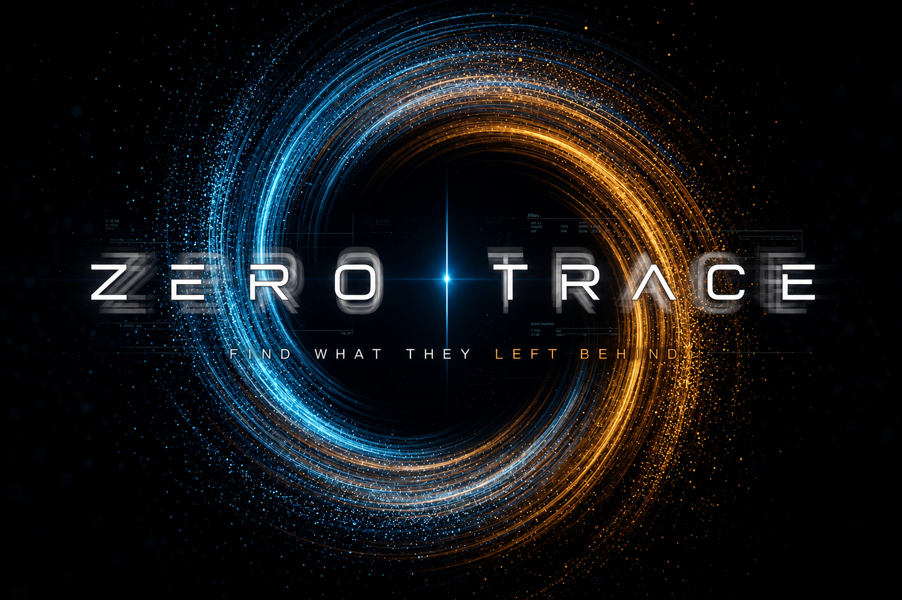

Malware Analysis
Unpacking loaders, decoding configs, and mapping capability to behaviour — from first stage to final payload.

Malware analysis · Reverse engineering · OSINT · Threat intelligence. Every attack leaves evidence — we trace it.
A single artifact is a thread. Pulled carefully, it unravels an entire operation — the infrastructure, the tooling, and eventually the actor.
Unpacking loaders, decoding configs, and mapping capability to behaviour — from first stage to final payload.
Disassembly and decompilation of the unknown, recovering algorithms, protocols, and the intent behind the code.
Open-source correlation of infrastructure, personas, and leaks into a single, defensible picture.
Turning scattered indicators into attribution, tracking actors and campaigns across time.
Find what they left behind.